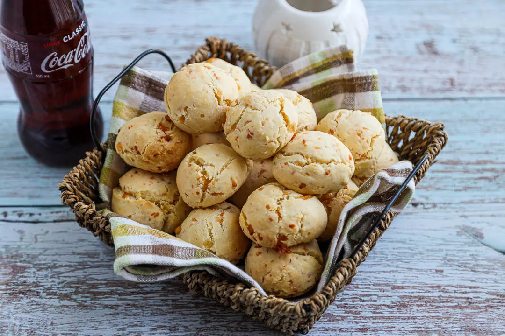

A simple bun called chipa is the most common food staple in Paraguay. The famous bread is made with cassava flour, lard, and anise. It originates from the Native American people Guarani, indigenous to the Amazon area of Brazil, Argentina, and Paraguay. For the people of Paraguay, chipas represent their daily bread which is eaten together with numerous main meals or as a snack.
Meal prep time : 40 minutes
Servings : 16